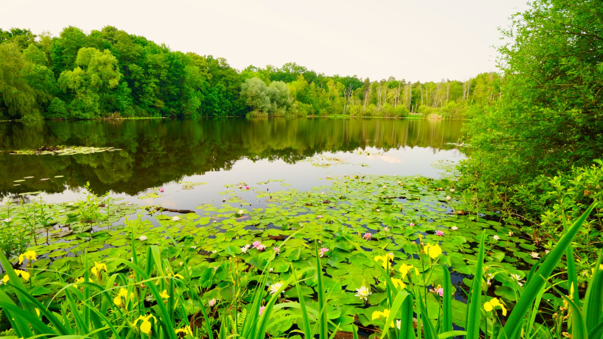
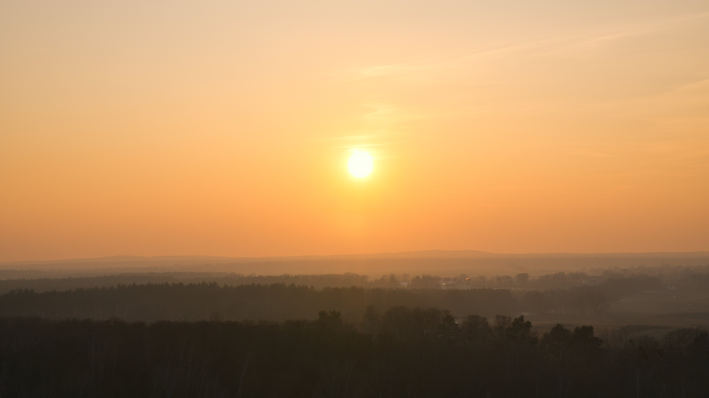
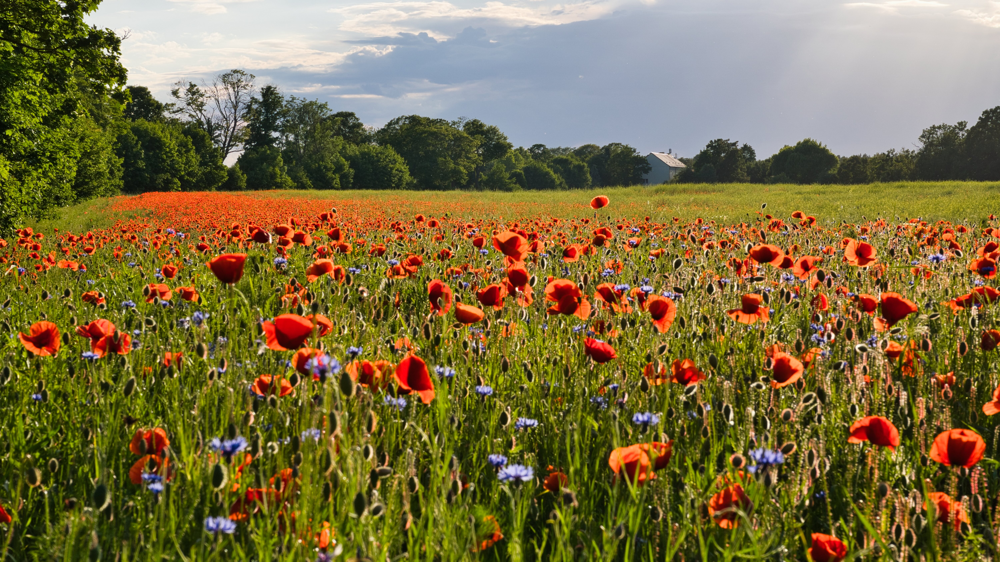
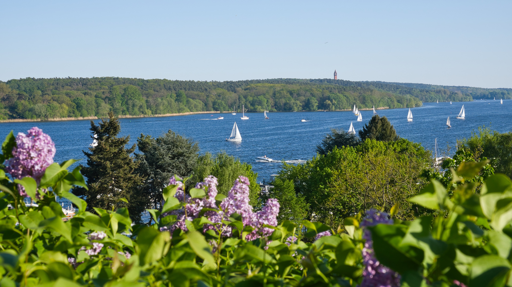
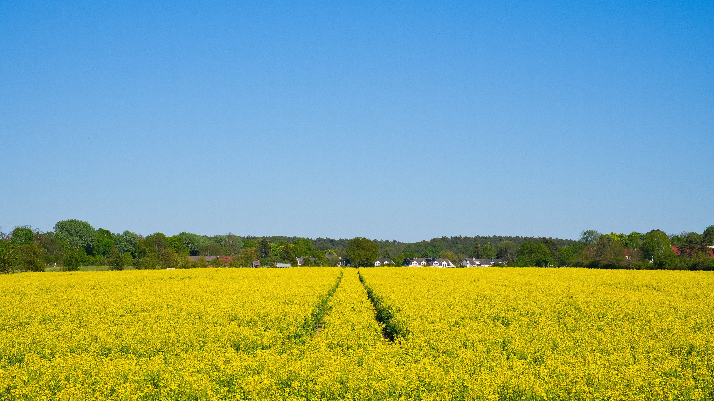
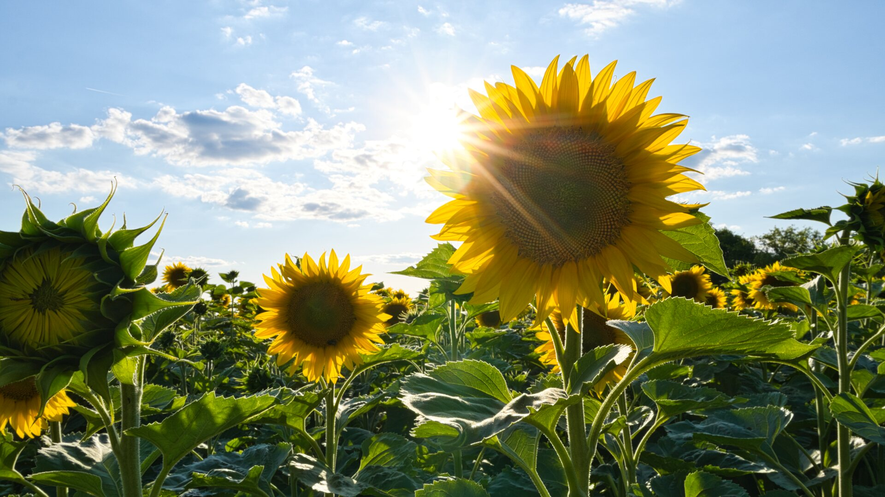

Fotogalerie
Einige Eindrücke aus der Natur rund um Berlin.

Teufelssee am Müggelsee
📅 Juni 2025

Sonnenuntergang vom Hahneberg
📅 Januar 2026

Klatschmohnfeld an der Engelsfelder Chaussee
📅 Juni 2026

Blick von der Haveldühne auf die Havel
📅 Mai 2026

Rapsfeld bei der Groß Glienicker Heide
📅 Mai 2026

Schöne Abendstimmung am Sonnenblumenfeld
📅 Juli 2026
Sonnenuntergang an der Scharfen Lanke
📅 Juli 2026
📩 Kontakt
Hast du Interesse an einer Aktivität oder möchtest einfach Kontakt aufnehmen? Dann freue ich mich über deine Nachricht.
📧 E-Mail:
outdoor-aktivitaetenberlin@gmx.de
🌿 Ich antworte in der Regel innerhalb von 1 bis 2 Tagen.